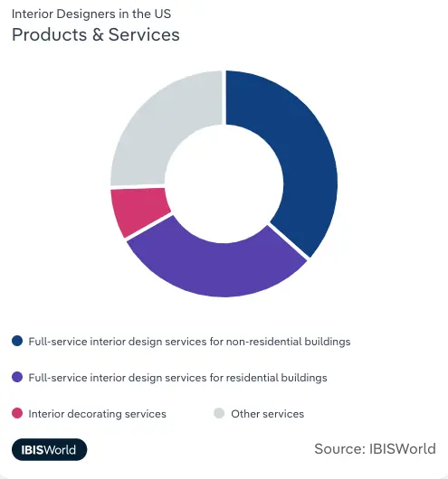
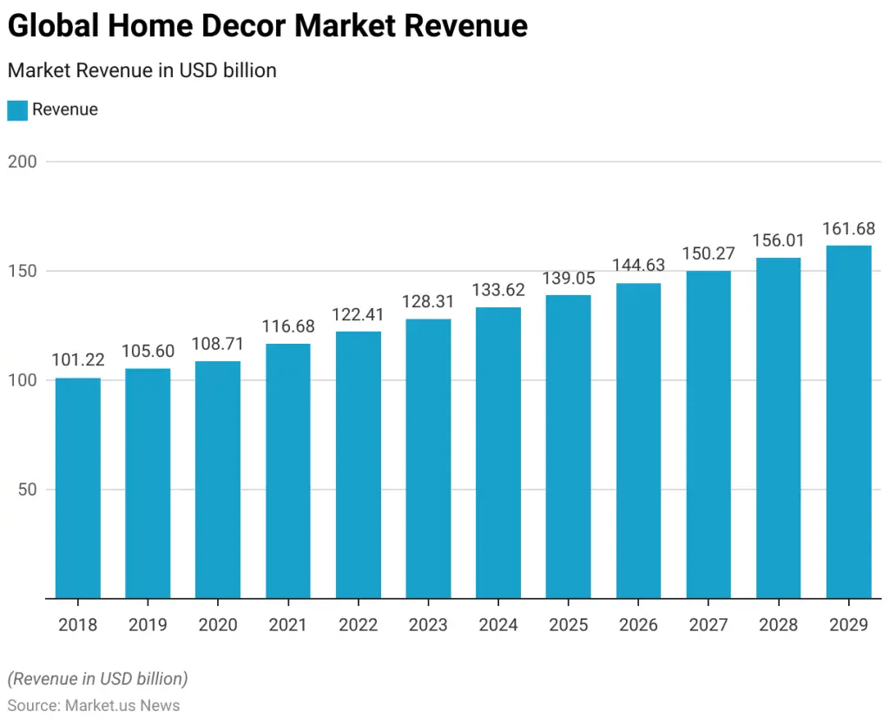

UK interior design market growth rate
- The interior design industry in the UK declined by 1.1% between 2019 and 2024.
- The UK interior design activities revenue is estimated to grow 2% in 2024-25.
( Source 3 )

This page offers a deep dive into the world of interior design and home decor, exploring the latest industry statistics, facts, and trends. Discover key insights into global market size, growth projections, and leading companies, with a focus on the UK and US markets.
Stay ahead of the curve with information on the latest design trends, including the rise of sustainability and technology in the industry. Whether you’re a home design enthusiast, industry professional, or simply curious about the evolving landscape of interior design, this page provides a comprehensive resource to expand your knowledge.
Note: All currencies are stated in USD ($) and GBP (£).
TABLE OF CONTENTS
( Source 1 )
( Source 5 )
The top countries generating the most revenue in the home decor market in 2024 are the United States, China, Germany, Japan and Canada.
( Source 2 )
( Source 3 )
( Source 4 )
( Source 1 )
( Source 5 )
( Source 3 )
( Source 4 )
The leading companies in the interior design market who collectively hold the largest market share include:
( Source 7 )
Take a look at the forecasted 2025 revenue for the UK’s largest interior design companies:
( Source 3 )
Take a look at the 2024 revenue for the largest interior design companies in the US:
( Source 4 )
Interior Design Activities in the UK, Products & Services – IBISWorld
( Source 3 )
Interior Design Activities in the US, Products & Services – IBISWorld
( Source 4 )
( Source 3 )
( Source 6 )
( Source 2 )
( Source 5 )
( Source 1 )
( Source 7 )

Home decor refers to the art of decorating a space to make it visually appealing and comfortable. It involves the use of various accessories and furnishings, such as furniture, lighting, textiles, artwork, and plants.
The home decor market includes sectors such as decorations, carpets and rugs, curtains and blinds, and candles. These sectors offer a wide range of products designed to enhance the aesthetics and functionality of living spaces.
( Source 2 )
( Source 8 )
( Source 2 )
The global home decor market has seen steady growth over the years.
Global home decor market revenue by year – Market.us News
( Source 9 )
( Source 10 )
The top companies in the world holding the market share in Home Decor include:
( Source 11 )
The online home decor market leaders worldwide include:
The home decor market leaders in the UK include:
( Source 12 )
( Source 9 )
SOURCES




Bars, balustrades, staircases, worktops, cladding and pieces that don’t have a name yet. Our designers and craftspeople work in brass, copper, zinc and steel, and alongside wood.